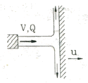
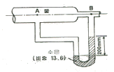
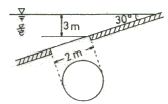

소방설비산업기사(기계) (2013-03-10 기출문제)
1과목: 소방원론
1. 위험물안전관리법령상 품명이 특수인화물에 해당하는 것은?
- 등유
- 경유
- 디에틸에테르
- 휘발유
(정답률: 92%)

2. 어떤 기체의 확산 속도가 이산화탄소의 2배였다면 그 기체의 분자량은 얼마로 예상할 수 있는가?
- 11
- 22
- 44
- 88
(정답률: 61%)
3. 건축물의 주요구조부가 아닌 것은?
- 기둥
- 바닥
- 보
- 옥외계단
(정답률: 86%)
4. 다음 중 인체에 가장 강한 독성을 가지고 있는 것은?
- 이산화탄소
- 산소
- 질소
- 포스겐
(정답률: 91%)
5. 제4류 위험물을 취급하는 위험물제조소에 설치하는 게시판의 주의사항으로 옳은 것은?
- 물기주의
- 화기주의
- 화기엄금
- 충격주의
(정답률: 89%)
6. 가연성 기체와 공기를 미리 혼합 시킨 후에 연소시키는 연소형태는?
- 확산연소
- 표면연소
- 분해연소
- 예혼합연소
(정답률: 89%)
7. 복사에 관한 Stefan-Boltzmann 의 법칙에서 흑체의 단위표면적에서 단위 시간에 내는 에너지의 총량은 절대온도의 얼마에 비례하는가?
- 제곱근
- 제곱
- 3제곱
- 4제곱
(정답률: 82%)
8. 연소 시 분해연소의 전형적인 특성을 보여줄 수 있는 것은?
- 휘발유
- 목재
- 목탄
- 나프탈렌
(정답률: 70%)
9. 연기의 농도가 감광계수로 10 일 때의 상황을 옳게 설명한 것은?
- 가시거리는 0.2 ~ 0.5m 이고 화재 최성기 때의 농도
- 가시거리는 5m이고 어두운 것을 느낄 정도의 농도
- 가시거리는 20 ~ 30m 이고 연기감지기가 작동할 정도의 농도
- 가시거리는 10m 이고 출화실엣 연기가 분출할 때의 농도
(정답률: 79%)
10. 피난계획의 일반원칙 중 fail safe 원칙에 해당하는 것은?
- 피난경로는 간단 명료할 것
- 두 방향 이상의 피난통로를 확보하여 둘 것
- 피난수단은 이동식 시설을 원칙으로 할 것
- 그림을 이용하여 표시를 할 것
(정답률: 82%)
11. 제3종 분말소화약제의 열분해시 발생되는 생성물이 아닌 것은?
- NH3
- HPO3
- CO2
- P2O5
(정답률: 59%)
12. 액체 물 1g이 100℃, 1기압에서 수증기로 변할 때 열의 흡수량은 몇 cal 인가?
- 439
- 539
- 639
- 739
(정답률: 73%)
13. 정전기의 축적을 방지하기 위한 대책에 해당되지 않는 것은?
- 접지를 한다.
- 물질의 마찰을 크게 한다.
- 공기를 이온화한다.
- 공기의 상대습도를 일정 수준 이상으로 유지한다.
(정답률: 86%)
14. 다음 중 증기압의 단위가 아닌 것은?
- mmHg
- kPa
- N/m2
- cal/℃
(정답률: 80%)
15. 연소의 3요소는 가연물, 산소공급원, 점화원이다. 다음 중 산소공급원이 될 수 없는 것은?
- 염소산칼륨
- 과산화나트륨
- 질산나트륨
- 네온
(정답률: 89%)
16. 위험물안전관리법령상 위험물에 속하지 않는 것은?
- 경유
- 질산
- 수산화칼슘
- 황린
(정답률: 62%)
17. 포 소화약제에서 포가 갖추어야 할 구비조건 중 틀린 것은?
- 유동성이 좋아야 한다.
- 비중이 커야 한다.
- 유면봉쇄성이 좋아야 한다.
- 내유성이 좋아야 한다.
(정답률: 72%)
18. ABC급 분말소화기 약제의 주성분에 해당하는 것은?
- NH4H2PO4
- NaHCO3
- KHCO3
- Al2(SO4)3
(정답률: 85%)
19. 물분무소화설비의주된 소화효과로만 나열된 것은?
- 냉각효과, 질식효과
- 질식효과, 연쇄반응 차단효과
- 냉각효과, 연쇄반응 차단효과
- 연쇄반응 차단효과, 희석효과
(정답률: 87%)
20. 할론 1301 소화약제와 이산화탄소 소화약제의 주된 소화효과를 순서대로 가장 적합하게 나타낸 것은?
- 억제소화 - 질식소화
- 억제소화 - 부촉매소화
- 냉각소화 - 억제소화
- 질식소화 - 부촉매소화
(정답률: 78%)
2과목: 소방유체역학
21. 회전수 1000rpm, 전양정 60m에서 0.12m3/s의 물을 배출 하는 펌프의 축 동력이 100kW이다. 이 펌프와 상사인 펌프가 크기가 3배이면서 500rpm으로 운전될 때의 축동력을 구하면 몇 kW인가?
- 2037.5
- 203.75
- 3037.5
- 4037.5
(정답률: 60%)
22. 그림과 같이 고정된 노즐에서 균일한 유속 V=40m/s, 유량Q=0.2m3/s로 물이 분출되고 있다. 분류와 같은 방향으로 u=10m/s의 일정 속도로 운동하고 있는 평판에 분사된 물이 수직으로 충돌할 때 분류가 평판에 미치는 충격력은 몇 kN인가?

- 4.5
- 6
- 44.1
- 58.8
(정답률: 52%)
23. 20℃에서 물이 지름 75mm인 관속을 1.9×10-3m3/s로 흐르고 있다. 이때 레이놀즈 수는 얼마 정도인가? (단, 20℃일 때 물의 동점성계수는 1.006×10-6m2/s니다.)
- 1.13×104
- 1.99×104
- 2.83×104
- 3.21×104
(정답률: 49%)
24. 검사면을 통과하는 유동에 대하여 질량유량(m)을 m=ρAV로 구할 때 필요한 조건이 아닌 것은? (단, ρ는 밀도, A는 유동 단면적, V는 유체의 속도이다.)
- 검사면은 움직이지 않는다.
- 밀도는 일정하다.
- 검사면이 원형이다.
- 유동은 검사면에 수직이다.
(정답률: 53%)
25. 온도차이 △T, 열전도율 k, 두께 x, 열전달 면적 A인 벽을 통한 열전달률이 Q이다. 동일한 열전달 면적인 강태에서 온도차이가 2배, 벽의 열전도율이 4배가 되고 벽의 두께가 2배가 되는 경우 열전달률은 몇 배가 되는가?
- 4배
- 8배
- 16배
- 32배
(정답률: 50%)
26. 그림과 같이 물이 흐르고 있는 관에 설치된 시차 액주계를 보고 A, B 두 지점의 압력차를 구하면 약 몇 kPa 인가?

- 2.72
- 6.73
- 24.7
- 52.5
(정답률: 45%)
27. 깊이를 모르는 물속에서 생성된 직경 1cm의 공기 기포가 수면으로 부상하여 직경 2cm로 팽창하였다. 기포 내 온도가 일정하다면 물의 깊이는 몇 m 인가? (단, 중력가속도는 10m/s2, 대기압은 105N/m2, 물의 밀도는 1000kg/m3로 가정한다.)
- 70
- 80
- 90
- 100
(정답률: 23%)
28. 물이 담긴 탱크의 밑바닥 옆면에 지름 5mm 의 구멍이 뚫렸다. 탱크는 오리피스의 단면에 비하여 무한히 크다. 오리피스 중심으로부터 물이 몇 m 높이로 탱크에 담겨 있을 때 10m/s로 물이 분출되겠는가? (단, 오리피스의 속도계수는 Cv=0.9이다.)
- 5.1
- 6.3
- 7.5
- 8.7
(정답률: 46%)
29. 무게가 45000N인 어떤 기름의 체적이 5.63m3일 때 이 기름의 밀도는 몇 kg/m3인가?
- 815.6
- 803.1
- 792.9
- 781.1
(정답률: 43%)
30. 펌프의 이상 현상 중 허용 흡입수두와 가장 관련이 있는 것은?
- 수온상승 현상
- 수격 현상
- 공동 현상
- 서징 현상
(정답률: 70%)
31. 피스톤과 실린더로 구성된 밀폐된 용기 내에 일정한 질량의 이상기체가 차 있다. 초기 상태의 압력은 2bar, 체적은 0.5m3이다. 이 시스템의 온도가 일정하게 유지되면서 팽창하여 압력이 1bar가 되었다. 이 과정 동안에 시스템이 한 일은 몇 kJ 인가?
- 52.1
- 57.2
- 62.7
- 69.3
(정답률: 17%)
32. 다음 물질 중 비열이 가장 큰 것은?
- 공기
- 물
- 콘크리트
- 철
(정답률: 77%)
33. 전양정이 60m 이고, 양수량이 0.032m3/s 인 원심펌프의 축동력이 22.4kW이다. 이 펌프의 효율은 얼마인가?
- 119%
- 84%
- 75%
- 8.6%
(정답률: 62%)
34. 급격 확대관과 급격 축소관에서 부차적 손실계수를 정의하는 기준속도는?
- 모두 상류속도
- 모두 하류속도
- 급격 확대관 : 상류속도, 급격 축소관 : 하류속도
- 급격 확대관 : 하류속도, 급격 축소관 : 상류속도
(정답률: 80%)
35. 지름 200mm인 수평 원관 내를 어떤 액체가 층류로 흐를때 관 벽에서의 전단응력이 150Pa이다. 관의 길이가 30m 일 때 압력강하 △P는 몇 kPa 인가?
- 70
- 80
- 90
- 100
(정답률: 40%)
36. 어떤 관 속의 정압(절대압력)은 294kPa, 온도는 27℃, 공기의 기체상수 R=287 J/kgㆍK 일 결루, 안지름 250mm인 관 속을 흐르고 있는 공기의 평균 유속이 50m/s이면 공기는 매초 약 몇 kg 이 흐르는가?
- 8.4
- 9.5
- 10.7
- 12.5
(정답률: 36%)
37. 소화설비비용으로 많이 사용하는 유량계에 대한 설명으로 잘못된 것은?
- 유량측정 시 플로트의 변동 폭이 클 때는 최고점의 값을 읽는다.
- 유량계 전 후 배관에 관 부속품(밸브 등)이 근접 설치되어 있으면 안된다.
- 유량계의 규격 관경과 실제 관경이 일치하는지 확인해야 한다.
- 유량계의 설치방향과 유동방향이 일치하는지 확인해야 한다.
(정답률: 53%)
38. 유체에 대한 일반적인 설명으로 틀린 것은?
- 아무리 작은 전단응력이라도 물질 내부에 전단응력이 생기면 정지상태로 있을 수가 없다.
- 점성이 없고 지압축성인 유체를 이상유체라 한다.
- 충격파는 비압축성 유체에서는 잘 관찰되지 않는다.
- 유체에 미치는 압축의 정도가 커서 밀도가 변하는 유체를 비압축성유체라 한다.
(정답률: 71%)
39. 직경 2m의 원형 수문이 그림과 같이 수면에서 3m 아래에 30° 각도로 기울어져 있을 때 수문의 자중을 무시하면 수문이 받는 힘은 약 몇 kN 인가?

- 107.7
- 94.2
- 78.5
- 62.8
(정답률: 34%)
40. 압력이 100kPa abs 이고 온도가 55℃인 공기의 밀도는 몇 kg/m3 인가? (단, 공기의 기체상수는 287 J/kgㆍK이다.)
- 12.0
- 24.2
- 1.06
- 2.14
(정답률: 49%)
3과목: 소방관계법규
41. 전문소방시서공사업의 법인인 경우 자본금기준은 얼마인가?
- 5천만원 이상
- 1억원 이상
- 2억원 이상
- 3억원 이상
(정답률: 76%)
42. 소방안전관리자를 해임한 경우 해임한 날로부터 며칠 이내에 재선임하여야 하는가?
- 7일
- 15일
- 30일
- 60일
(정답률: 79%)
43. 하자보수 대상 소방시설의 하자보수 보증기간이 다음 중 다른 것은?
- 자동식소화기
- 비상경보설비
- 무선통신보조설비
- 유도등 및 유도표지
(정답률: 66%)
44. 소방업무에 필요한 경비의 일부를 보조하는 국고보도 대상사업의 범위가 아닌 것은?
- 소화활동설비
- 소방자동차
- 소방정
- 소방전용통신설비
(정답률: 65%)
45. 소방안전관리자를 선임하여야 하는 특정소방대상물 중 1급 소방안전관리대상물의 일반적 기준에 해당하지 않는 것은?
- 연면적 15000m2 이상인 것
- 특정소방 대상물로서 층수가 11층 이상인 것
- 물분무 등 소화설비를 설치하는 특정소방대상물
- 가연성 가스를 1000톤 이상 저장ㆍ취급하는 시설
(정답률: 49%)
46. 위험물안전관리법상 제1류 위험물의 성질은?
- 산화성 액체
- 가연성 고체
- 금수성 물질
- 산화성 고체
(정답률: 83%)
47. 소방방재청장, 소방본부장 또는 소방서장은 소방특별조사를 하려면 관계인에게 조사대상, 조사기간 및 조사사유 등을 며칠 전에 서면으로 알려야 하는가?
- 3일전
- 7일전
- 10일전
- 14일전
(정답률: 68%)
48. 관리의 권원이 분리되어 있는 특정소방대상물에서 공동 소방안전관리자를 선임하지 않아도 되는 것은?
- 연면적이 5000m2 이상인 복합건축물
- 지하구
- 판매시설 중 도매시장 및 소매시장
- 지하층을 제외한 층수가 11층 이상인 고층 건축물
(정답률: 67%)
49. 화재의 확대가 빠른 특수가연물의 품명과 수량의 기준으로 옳지 않은 것은?
- 발포시킨 합성수지류 : 20m3 이상
- 가연성 약체류 : 2m3 이상
- 넝마 및 종이부스러기 : 400kg 이상
- 볏짚류 : 1000kg 이상
(정답률: 63%)
50. 건축허가를 함에 있어서 소방본부장 또는 소방서장의 동의를 받아야 하는 건축물 등의 범위에 속하는 것은?
- 승강기 등 기계자치에 의한 주차시설로서 자동차 10대를 주차할 수 있는 시설
- 연면적이 300m2 인 업무시설로 사용되는 건축물
- 차고ㆍ주차장으로 사용되는 층 중 바닥면적이 150m2 인 건축물
- 연면적이 200m2 인 노유자시설 및 수련시설
(정답률: 65%)
51. 소방방재청장은 명예직의 소방대원으로 위촉 할 수 있다. 이에 해당되는 사람은?
- 소방기술사
- 소방안전관리자
- 고방설비기사로서 경력 8년 이상인 사람
- 소방행정발전에 공로가 있다고 인정되는 사람
(정답률: 73%)
52. 합성수지류 방염업의 방염처리시설 중 하나 이상의 시설을 갖추어야 하는데 이에 속하지 않는 것은?
- 제조설비
- 이송설비
- 성형설비
- 가공설비
(정답률: 62%)
53. 소방법의 정의에서 소방대상물의 관계인으로 옳지 않은 것은?
- 감리자
- 관리자
- 점유자
- 소유자
(정답률: 76%)
54. 단독경보형감지기를 설치하여야 하는 특정소방대상물의 기준으로 옳지 않은 것은?
- 연면적 1000m2 미만의 아파트
- 연면적 1000m2 미만의 기숙사
- 연면적 800m2 미만의 숙박시설
- 수련시설 내에 있는 연면적 2000m2 미만의 기숙사
(정답률: 57%)
55. 화재조사를 하는 관계인의 정당한 업무를 방해하거나 화재조사를 수행하면서 알게 된 비밀을 다른 사람에게 누설한 사람에 대한 벌칙은?
- 100만원 이하의 벌금
- 150만원 이하의 벌금
- 200만원 이하의 벌금
- 300만원 이하의 벌금
(정답률: 69%)
56. 특정소방대상물의 관계인 또는 발주자는 당해 도급계약의 수급인이 도급계약을 해지할 수 있는 경우가 아닌 것은?
- 소발시설업이 영업정지 처분을 받은 때
- 소방시설업이 등록취소 된 경우
- 소방시설업을 휴업한 때
- 정당한 사유 없이 20일 이상 소방시설공사를 계속하지 아니하는 때
(정답률: 62%)
57. 위험물을 취급하는 설비에서 정전기를 유효하게 제거하기 위한 방법으로 거리가 먼 것은?
- 접지에 의한 방법
- 자동적으로 압력의 상승을 정지시키는 방법
- 공기를 이온화하는 방법
- 공기중의 상대습도를 70% 이상으로 하는 방법
(정답률: 74%)
58. 화재경계지구내에서의 소방관서의 행정행위로 틀린 것은?
- 소방본부장 또는 소방서장은 화재경계지구 안의 관계인에게 소방시설의 유지관리를 위한 자체점검을 연 1회 이상 실시하여야 한다.
- 소방본부장 또는 소방서장은 화재경계지구 안의 관계인에 대하여 소방상 필요한 훈련 및 교육을 연 1회 이상 실시하여야 한다.
- 소방본부장 또는 소방서장은 소방상 필요한 훈련 및 교육을 실시하고자 하는 때에는 화재경계지구 안의 관계인에게 훈련 또는 교육 10일 전까지 그 사실을 통보하여야 한다.
- 소방본부장 또는 소방서장은 화재경계지구 안의 소방대상물의 위치ㆍ구조 및 설비 등에 대한 소방특별조사를 연 1회 이상 실시하여야 한다.
(정답률: 41%)
59. 제조소 등의 관계인은 위험물 제조소 등의 화재예방과 화재 등 재해발생시 비상조치를 위해 작성하는 예방규정은 시ㆍ도지사에게 언제까지 제출하여야 하는가?
- 매년도 10월 30일까지
- 위험물 제조소 등의 허가신청 시 제출
- 위험물 제조소 등의 사용 시작 전까지 제출
- 제출의무는 없으며 자체적으로 예방규정 수립
(정답률: 52%)
60. 소방관서 종합상황실의 실장이 기록ㆍ관리하여야 하는 내용에 속하지 않는 것은?
- 재난상황이 발생되지 않도록 하기 위한 예방관리업무 규정의 제정
- 하급소방기관에 대한 출동지령 또는 동급 이상의 소방기관 및 유관기관에 대한 지원요청
- 접수된 재난상황을 검토하여 가까운 소방서에 인력 및 장비의 동원을 요청하는 등의 사고수습
- 화재, 재난ㆍ재해 그 밖에 구조ㆍ구급이 필요한 상황의 발생의 신고접수
(정답률: 65%)
4과목: 소방기계시설의 구조 및 원리
61. 연결 송수관의 송수구, 체크밸브, 자동배수밸브의 설치순서로 맞는 것은?
- 습식의 경우 송수구, 체크밸브, 자동배수밸브의 순으로 설치
- 습식의 경우 송수구, 자동배수밸브, 체크밸브의 순으로 설치
- 건식의 경우 송수구, 체크밸브, 자동배수밸브의 순으로 설치
- 건식의 경우 체크밸브, 송수구, 자동배수밸브의 순으로 설치
(정답률: 62%)
62. 표준형 스프링클러헤드의 감도 특성에 의한 분류 중에서 조기반응(fast response)에 따른 스프링클러헤드의 반응시간지수(RTI)로 적합한 기준은?
- 50(mㆍs)1/2 이하
- 80(mㆍs)1/2 이하
- 150(mㆍs)1/2 이하
- 350(mㆍs)1/2 이하
(정답률: 53%)
63. 청정소화약제의 농도와 관련된 용어 중 NOAEL의 의미는?
- 쥐에 4시간 노출시켰을 때 모두 사망하는 최소 허용농도
- 사망에 이르게 할 수 있는 최소 허용농도
- 인간의 심장에 영향을 주지 않는 최대 허용농도로서 관찰이 불가능한 부작용 수준
- 악영향을 감지할 수 있는 최소 허용농도
(정답률: 62%)
64. 다음 소화기구에 대한 설명 중 틀린 것은?
- 소형소화기는 보행거리 20m 이내가 되도록 배치한다.
- 대형소화기는 보행거리 30m 이내가 되도록 배치한다.
- 소화기구는 바닥으로부터 1.5m 이하의 위치에 비치해야 한다.
- 이산화탄소 소화기구는 밀폐된 거실로서 바닥면적이 20m2 미만의 장소에 설치한다.
(정답률: 74%)
65. 제연설비에 설치되는 다음 기기 자동화재감지기와 연동되지 않아도 되는 것은?
- 가동식의 벽
- 댐퍼
- 분배기
- 배출기
(정답률: 57%)
66. 분말소화설비에서 축압용가스로 질소가스를 사용할 경우 소화약제 1kg에 대하여 몇 ℓ이상의 배관청소용 질소가스를 가산하여야 하는가?
- 5
- 10
- 15
- 20
(정답률: 44%)
67. 옥내소화전설비에서 가압송수장치의 체절운전시 순환배관의 설치에 따른 기준으로 맞는 것은?
- 순환배관은 앵글밸브에서 분기하여야 한다.
- 분기배관의 구경은 15mm 이상이어야 한다.
- 체절압력 미만에서 개방되는 릴리프밸브를 설치하여야 한다.
- 릴리프밸브 2차측에는 릴리프밸브 고장시 수리를 위한 게이트밸브를 설치하여야 한다.
(정답률: 56%)
68. 연결송수관설비가 설치되는 아파트에 방수구의 적용범위에서 제외될 수 있는 항목은?
- 옥내소화전함이 있는 층
- 아파트 2층
- 최상층
- 10층 이하의 층
(정답률: 58%)
69. 화재 안전기준에 의한 피난기구가 아닌 것은?
- 미끄럼대
- 피난사다리
- 구조대
- 엘리베이터
(정답률: 85%)
70. 예상제연구역의 바닥면적이 450m2이고, 예상제연구역이 직경40m인 원의 범위를 초과하는 거실의 배출기 최저 풍량은 시간당 몇 m3 이상이 되어야 하는가?
- 30000 m3
- 40000 m3
- 45000 m3
- 50000 m3
(정답률: 52%)
71. 물분무 소화설비로서 다음 설명 중 옳지 않은 것은?
- 분사된 물은 표면적이 크기 때문에 열을 흡수하기 쉽다.
- 화원으로 산소공급을 차단하는 질식효과를 가져온다.
- 분사된 물은 전기적인 절연성이 양호하므로 전기 화재에도 이용 가능하다.
- 분사된 물은 유화층을 형성하여 유류화재에는 부적당하다.
(정답률: 50%)
72. 표준형 스프링클러헤드 보다 기류온도 및 기류속도가 조기에 반응하여 일정규모 이내의 랙크식 창고를 보호하기 위해 설치하는 헤드로 적합한 것은?
- Residential 스프링클러헤드
- Intermediate Level 스프링클러헤드
- Dry Type 스프링클러헤드
- ESFR 스프링클러헤드
(정답률: 51%)
73. 어떤 소방대상물의 지하층에 2개, 1층 2층에 각각 4개 3층 4층에 각각 3개씩 옥내소화전이 설치되어 있다. 수원의 저수량은? (단 옥상수조는 생략한다.)(오류 신고가 접수된 문제입니다. 반드시 정답과 해설을 확인하시기 바랍니다.)
- 5.2m3 이상
- 7.8m3 이상
- 10.4m3 이상
- 13m3 이상
(정답률: 56%)
74. 포소화설비의 기동장치에 대한 설명으로 틀린 것은?
- 수동식 기동장치의 조작부는 화재시 쉽게 접근할 수 있는 곳에 설치할 것
- 차고에 설치하는 포소화설비의 수동식 기동식장치는 방사구역마다 2개 이상 설치할 것
- 2 이상으 방사구역을 가진 포소화설비에는 방사구역을 선택할 수 있는 구조로 할 것
- 호스접결구에는 가까운 곳의 보기 쉬운 곳에 “접결구”라고 표시한 표지를 설치할 것
(정답률: 53%)
75. 소화능력단위에 의한 분류에서 소형소화기를 올바르게 설명한 것은?
- 능력단위가 1단위 이상이면서 대형소화기의 능력단위 미만인 소화기이다.
- 능력단위가 3단위 이상이면서 대형소화기의 능력단위 미만인 소화기이다.
- 능력단위가 5단위 이상이면서 대형소화기의 능력단위 미만인 소화기이다.
- 능력단위가 10단위 이상이면서 대형소화기의 능력단위 미만인 소화기이다.
(정답률: 76%)
76. 폐쇄형 스프링클러 헤드를 사용하는 설비 방식의 종류가 아닌 것은?
- 습식
- 건식
- 준비작동식
- 일제살수식
(정답률: 75%)
77. 포소화설비의 구성요소가 아닌 것은?
- 자동개방밸브
- 클리닝 밸브
- 혼합장치
- 고정포방출구
(정답률: 55%)
78. 의료시설 용도의 소방대상물 3층에 피난기구를 설치할 때에 가장 부적합한 것은?
- 미끄럼대
- 피난교
- 피난로우프
- 피난용 트랩
(정답률: 50%)
79. 물분무소화설비에서 제어밸브의 설치위치 기준은?
- 바닥으로부터 0.1m 이상 0.4m 이하
- 바닥으로부터 0.5m 이상 0.7m 이하
- 바닥으로부터 0.8m 이상 1.5m 이하
- 바닥으로부터 1.6m 이상 1.8m 이하
(정답률: 80%)
80. 옥외소화전의 호스연결 직관 노즐에서 피토 게이지(Pitot Gauge) 측정결과 0.27MPa의 방수압력이 되었을 때 유량은? (단, 옥외소화전 직관 nozzle 구경은 1.9cm로 한다.)
- 37.735 ℓ/min
- 387.349 ℓ/min
- 38.735 ℓ/min
- 3.874 ℓ/min
(정답률: 46%)